[Java] 62. Spring bootでWeb-Filterを設定する方法(Spring Security)
こんにちは。明月です。
この投稿はJavaのSpring bootでWeb-Filterを設定する方法(Spring Security)に関する説明です。
私も実はSpring Securityに関して詳細的までは知りません。 関連仕様書とドキュメントを見たけれど、量も多すぎるし、すべて内容をちゃんと活用することができるかと疑問もあります。ただ、「ブラウザからの要請(Request)がある時、Controllerから処理する前にFilterとして呼び出されること」ほど知っています。 Web Frameworkを使った際にもただセッション確認してUserインスタンスがあれば認証だし、それではなければ認証失敗するほど設定することがすべてだと思います。
それで今回にSpring bootを全般的に整理するところ、Web-Filterに関してどのように整理するほうが良いかを凄く悩みしました。
含めて今回に私がWeb FrameworkからSpring bootに移行する作業しながら、もう一つの目標を設定したのはフロントエンド(front-end)とバックエンド(back-end)の完全な分離を目標で作業しています。
そのために適用しなければならないことがセッションを利用したログイン認証ではなくJWT(Json web token)を利用してログイン管理がならなければならないです。
リンク - [Java] JWT(Json Web Token)を発行、確認する方法
以前から私がフロントエンドのフレームワーク(Angular, Vue, React)を使いたいでしたが、いつもセッションを完全に分離しなければならないという限界がありました。
SPA(Single page application)の環境にはメインページのPage requestが最初に一回だけ発生して、Javascriptを利用して動的にDOMとヘッダーを設定する環境になりますが、その場合にページのクッキーとセッション、変数のデータ管理、そして非同期で要請するajaxのクッキーとセッション、変数のデータ管理がずいぶん複雑になるでしょう。
私だけそうかも知りません。この部分は各の経験により感じる部分の差異があると思いますね。
一旦、この投稿の目標はSpring bootにてWeb-Filterを使ってJWT(Json web token)を利用して認証するプログラムを作成することです。
まず、私がJWT認証するためにAccess TokenとRefresh Tokenを実装しなければならないでした。
まず、以前のプロジェクトからpom.xmlにJWTライブラリを追加しました。
レポジトリ - https://mvnrepository.com/artifact/io.jsonwebtoken/jjwt/0.9.1
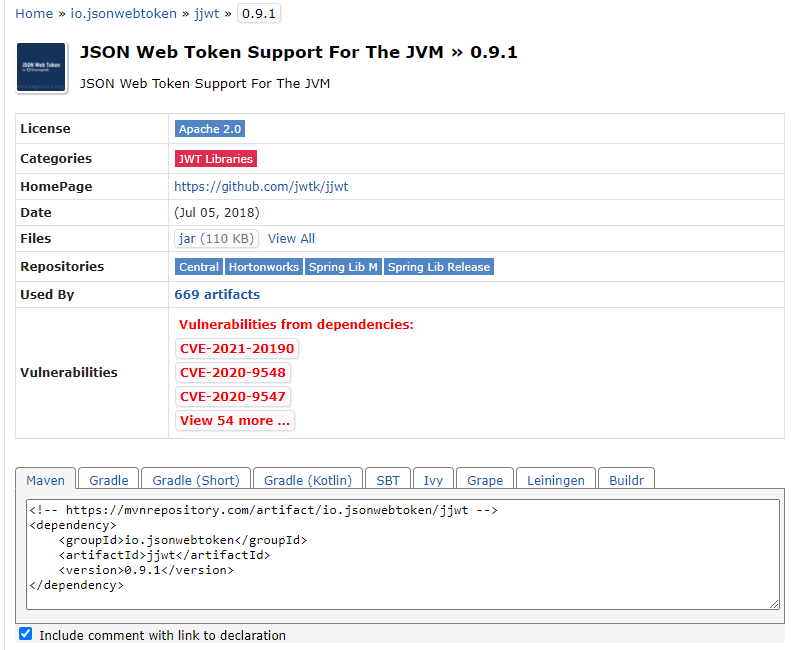
<dependency>
<groupId>io.jsonwebtoken</groupId>
<artifactId>jjwt</artifactId>
<version>0.9.1</version>
</dependency>
そしてfilterパッケージを生成して、JWT(Json web token)を扱うProviderクラスを生成しましょう。
package com.example.demo.filter;
import java.util.Base64;
import java.util.Date;
import javax.servlet.http.Cookie;
import javax.servlet.http.HttpServletRequest;
import javax.servlet.http.HttpServletResponse;
import org.springframework.beans.factory.annotation.Value;
import org.springframework.stereotype.Component;
import io.jsonwebtoken.Claims;
import io.jsonwebtoken.ExpiredJwtException;
import io.jsonwebtoken.Jws;
import io.jsonwebtoken.Jwts;
import io.jsonwebtoken.SignatureAlgorithm;
import io.jsonwebtoken.SignatureException;
// Autowiredの依存性注入が可能にするComponentアトリビュートを設定
@Component
public class JwtProvider {
// Refresh-Tokenのセキュリティキーをapplication.propertiesで設定できるように設定
@Value("spring.jwt.secret")
private String SECRET_KEY = "secret";
// Access-Tokenのセキュリティキーをapplication.propertiesで設定できるように設定
@Value("spring.jwt.access")
private String ACCESS_KEY = "access";
// tick基準 - 24時間
private final int TICK_24HOUR = 1000 * 60 * 60 * 24;
// tick基準 - 10分
private final int TICK_10MIN = 1000 * 60 * 10;
// CookieのKey名
private final String X_AUTH_TOKEN_REFRESH = "X-AUTH-TOKEN-REFRESH";
private final String X_AUTH_TOKEN_ACCESS = "X-AUTH-TOKEN-ACCESS";
// コンストラクタ
public JwtProvider() {
// キーをBase64暗号化して複雑さを高める。
SECRET_KEY = Base64.getEncoder().encodeToString(SECRET_KEY.getBytes());
ACCESS_KEY = Base64.getEncoder().encodeToString(ACCESS_KEY.getBytes());
}
// Refresh-Token生成関数
public String createRefreshToken(String id, HttpServletRequest req, HttpServletResponse res) {
// tokenを生成する。有効期限2週
var token = createToken(id, TICK_24HOUR * 14, SECRET_KEY, req);
// クッキーを生成する。
var cookie = createCookie(token, X_AUTH_TOKEN_REFRESH, TICK_24HOUR * 14 / 1000);
// ヘッダーにクッキーを追加する。Set-Cookie
res.addCookie(cookie);
// トークンのString値をリターン
return token;
}
// Access-Token生成関数
public String createAccessToken(String id, HttpServletRequest req, HttpServletResponse res) {
// tokenを生成する。有効期限10分
var token = createToken(id, TICK_10MIN, ACCESS_KEY, req);
// クッキーを生成する。
var cookie = createCookie(token, X_AUTH_TOKEN_ACCESS, TICK_10MIN / 1000);
// ヘッダーにクッキーを追加する。Set-Cookie
res.addCookie(cookie);
// トークンのString値をリターン
return token;
}
// ヘッダーでクッキーを満了させる。
public void clearToken(HttpServletRequest req, HttpServletResponse res) {
// クッキーデータがなければ、終了
if (req.getCookies() == null) {
return;
}
// Refresh-Tokenクッキー満了
res.addCookie(this.createCookie(null, X_AUTH_TOKEN_REFRESH, 0));
// Access-Tokenクッキー満了
res.addCookie(this.createCookie(null, X_AUTH_TOKEN_ACCESS, 0));
}
// トークン生成関数
public String createToken(String id, long milisecond, String signature, HttpServletRequest req) {
// Claimsを生成
var claims = Jwts.claims().setId(id);
// 現在時間
var now = new Date();
// JWTトークンを作ることで、Payload情報と生成時間、満了時間、アルゴリズム週類と暗号化キーで暗号化する。
return Jwts.builder()
.setClaims(claims)
.setIssuedAt(now)
.setExpiration(new Date(now.getTime() + milisecond))
.signWith(SignatureAlgorithm.HS256, signature).compact();
}
// StringになっているトークンをJws<Claims>タイプで返却
public Jws<Claims> parseToken(String jwt, String signature) {
try {
// 暗号化キーで復号化する。
// 암호화 키나 만료되었으면 에러가 발생
return Jwts.parser()
.setSigningKey(signature)
.parseClaimsJws(jwt);
} catch (SignatureException | ExpiredJwtException e) {
// エラーが発生するとnullをリターン
return null;
}
}
// トークンid値をリターン
public String getId(Jws<Claims> token) {
return token.getBody().getId();
}
// クッキーでRefresh-Tokenを取得する関数
public Jws<Claims> getRefreshToken(HttpServletRequest req) {
// クッキーでRefresh-Tokenを取得する。
var cookie = this.getCookie(req, X_AUTH_TOKEN_REFRESH);
// クッキーにデータがなければ
if (cookie != null) {
// Jws<Claims>タイプで変換
var token = parseToken(cookie, SECRET_KEY);
// 復号化になったら
if (token != null) {
// トークンリターン
return token;
}
}
// その以外はすべてnull
return null;
}
// クッキーからAccess-Tokenを取得する関数
public Jws<Claims> getAccessToken(HttpServletRequest req) {
// クッキーからAccess-Tokenを取得する。
var cookie = this.getCookie(req, X_AUTH_TOKEN_ACCESS);
// クッキーにデータがなければ
if (cookie != null) {
// Jws<Claims>タイプで変換
var token = parseToken(cookie, ACCESS_KEY);
// 復号化になったら
if (token != null) {
// トークンリターン
return token;
}
}
// その以外はすべてnull
return null;
}
// key名でクッキーの値を取得
private String getCookie(HttpServletRequest req, String key) {
// クッキーの値がなければnull
if (req.getCookies() == null) {
return null;
}
// 繰り返し文で
for (var c : req.getCookies()) {
// キーを探す。
if (key.equals(c.getName())) {
// クッキー値をリターン
return c.getValue();
}
}
// 無ければnull
return null;
}
// クッキーを生成する。
private Cookie createCookie(String token, String key, int expire) {
// クッキー生成 key-value
Cookie cookie = new Cookie(key, token);
// クッキーパス
cookie.setPath("/");
// Javascriptに読めない。
cookie.setHttpOnly(true);
cookie.setSecure(true);
// 満了時間設定
cookie.setMaxAge(expire);
// クッキーリターン
return cookie;
}
}
ここまでJWT(Json web token)を発行して値を取得します。そしてクッキーに登録、削除するクラスを作成しました。
これでSpring securityライブラリからフィルター(filter)設定しましょう。
Reference - https://qiita.com/nyasba/items/
Reference - https://www.baeldung.com/spring-security-login
まず、pom.xmlにライブラリを追加しましょう。
レポジトリ - https://mvnrepository.com/artifact/org.springframework.boot/spring-boot-starter-security/2.6.4
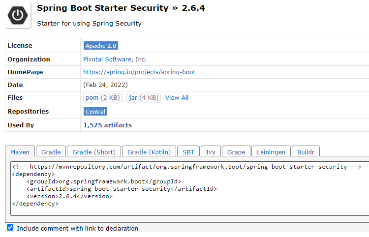
<dependency>
<groupId>org.springframework.boot</groupId>
<artifactId>spring-boot-starter-security</artifactId>
<version>2.6.4</version>
</dependency>
package com.example.demo.filter;
import org.springframework.beans.factory.annotation.Autowired;
import org.springframework.context.annotation.Configuration;
import org.springframework.security.config.annotation.web.builders.HttpSecurity;
import org.springframework.security.config.annotation.web.configuration.EnableWebSecurity;
import org.springframework.security.config.annotation.web.configuration.WebSecurityConfigurerAdapter;
import org.springframework.security.config.http.SessionCreationPolicy;
import org.springframework.security.web.authentication.UsernamePasswordAuthenticationFilter;
// アトリビュート設定
@Configuration
@EnableWebSecurity
public class SecurityConfig extends WebSecurityConfigurerAdapter {
// JWTプロバイダーを依存性注入で受け取る。
@Autowired
private JwtProvider jwtProvider;
// WebFilter例外パターン
private String[] passUrl = new String[] { "/login.html(.*)", "/logout.html(.*)", "/refresh.html(.*)" };
// 設定
@Override
protected void configure(HttpSecurity http) throws Exception {
// ライブラリの基本 /loginページとcsrf機能をoff
http.httpBasic().disable()
.csrf().disable()
// セッション設定する。
// TokenタイプにはSessionCreationPolicy.STATELESSを設定してセッションを生成しない。
.sessionManagement()
.sessionCreationPolicy(SessionCreationPolicy.STATELESS)
.and()
// 認証処理
// 例外パターン以外はすべて認証を要求
.authorizeRequests()
.antMatchers(passUrl).permitAll()
.anyRequest().authenticated()
.and()
// フィルター適用
.addFilterAfter(new WebFilter(jwtProvider, passUrl), UsernamePasswordAuthenticationFilter.class);
}
}
上のソースをみれば私がpassUrl値を使いました。
このことが私が以前から使った方法ですが。。。他の方の投稿を見るとHttpSecurityインスタンスで綺麗に例外処理しますが、私はどのように設定してもフィルターが綺麗に設定できないですね。
私がどのようにフィルター設定になるかを理解できないらしいです。なので、私は上の方法で設定しました。
package com.example.demo.filter;
import java.io.IOException;
import java.util.ArrayList;
import javax.servlet.FilterChain;
import javax.servlet.ServletException;
import javax.servlet.ServletRequest;
import javax.servlet.ServletResponse;
import javax.servlet.http.HttpServletRequest;
import javax.servlet.http.HttpServletResponse;
import org.springframework.security.authentication.UsernamePasswordAuthenticationToken;
import org.springframework.security.core.context.SecurityContextHolder;
import org.springframework.web.filter.GenericFilterBean;
// WebFilterクラス
public class WebFilter extends GenericFilterBean {
// SecurityConfigクラスでJWTプロバイダーとpassUrl情報を受け取る。
private JwtProvider jwtProvider;
private String[] passUrl;
// コンストラクタ
public WebFilter(JwtProvider jwtProvider, String[] passUrl) {
this.jwtProvider = jwtProvider;
this.passUrl = passUrl;
}
// フィルターリング
@Override
public void doFilter(ServletRequest request, ServletResponse response, FilterChain chain)
throws IOException, ServletException {
var req = (HttpServletRequest) request;
var res = (HttpServletResponse) response;
// passUrl情報で認証が必要ないページはスキップする。
String url = req.getRequestURI();
for (String buf : passUrl) {
if (url.matches(buf)) {
chain.doFilter(req, res);
return;
}
}
// JWTプロバイダーからAccess-Tokenを取得する。
var access = jwtProvider.getAccessToken(req);
// 満了になったか認証情報が合わなかったらnullが発生するので認証ができない。
if (access != null) {
// 認証になったらフィルターを超えるように認証処理する。
SecurityContextHolder.getContext().setAuthentication(
new UsernamePasswordAuthenticationToken(jwtProvider.getId(access), null, new ArrayList<>()));
} else {
// 認証失敗コード - 403 権限無し
res.setStatus(403);
}
chain.doFilter(request, response);
}
}
ここまでがJWT認証処理です。私もSpring security仕様をはっきり知らないので、様々なブログと投稿を参照して作成しました。でも、私の場合はかなりシンプルに作成されましたね。
実際にControllerからはどのように動くかを確認しましょう。
package com.example.demo.controller;
import java.io.ByteArrayInputStream;
import java.io.ByteArrayOutputStream;
import java.io.IOException;
import java.io.ObjectInputStream;
import java.io.ObjectOutputStream;
import java.io.Serializable;
import java.util.Base64;
import javax.servlet.http.HttpServletRequest;
import javax.servlet.http.HttpServletResponse;
import org.springframework.beans.factory.annotation.Autowired;
import org.springframework.stereotype.Controller;
import org.springframework.ui.Model;
import org.springframework.web.bind.annotation.RequestMapping;
import org.springframework.web.bind.annotation.ResponseBody;
import com.example.demo.filter.JwtProvider;
// Sessionみたいにユーザ情報を取得する時にデータベース接続を減らすためユーザ情報クラス生成
class User implements Serializable {
// シリアル化
private static final long serialVersionUID = 1L;
// メンバー変数
private String id;
// getter
public String getId() {
return id;
}
// setter
public void setId(String id) {
this.id = id;
}
// Userクラスをシリアル化する。
public static String convertSerializable(User user) {
try (var baos = new ByteArrayOutputStream()) {
try (var oos = new ObjectOutputStream(baos)) {
oos.writeObject(user);
var data = baos.toByteArray();
// byteタイプをbase64に圧縮
return Base64.getEncoder().encodeToString(data);
}
} catch (Throwable e) {
e.printStackTrace();
return null;
}
}
// Userクラスを逆シリアル化する。
public static User convertData(String code) {
// base64タイプをbyteタイプに変換
var data = Base64.getDecoder().decode(code);
try (var bais = new ByteArrayInputStream(data)) {
try (var ois = new ObjectInputStream(bais)) {
Object objectMember = ois.readObject();
return (User) objectMember;
}
} catch (Throwable e) {
e.printStackTrace();
return null;
}
}
}
// コントローラーアトリビュート
@Controller
// Controllerクラス
public class HomeController {
// JWTトークンプロバイダー
@Autowired
private JwtProvider jwtProvider;
// マッピングアドレス
@RequestMapping(value = { "/", "/index.html" })
@ResponseBody // 例のため、templateを使わない。
public String index(Model model, HttpServletRequest req, HttpServletResponse res) {
// Accessトークン取得
var access = jwtProvider.getAccessToken(req);
// userシリアル化コード取得
var code = jwtProvider.getId(access);
// 逆シリアル化
var user = User.convertData(code);
// id値を出力
return user.getId();
}
// マッピングアドレス
@RequestMapping(value = "/login.html")
@ResponseBody // 例のため、templateを使わない。
public String login(Model model, HttpServletRequest req, HttpServletResponse res) {
// Refreshトークン生成
jwtProvider.createRefreshToken("nowonbun", req, res);
// Userインスタンス生成
var user = new User();
// id設定
user.setId("nowonbun");
// インスタンスをシリアル化してAccessトークンを生成
jwtProvider.createAccessToken(User.convertSerializable(user), req, res);
// 応答コード - 正常 200
res.setStatus(200);
return "login";
}
// マッピングアドレス
@RequestMapping(value = "/refresh.html")
public void refresh(Model model, HttpServletRequest req, HttpServletResponse res) throws IOException {
// Refreshトークン取得
var refresh = jwtProvider.getRefreshToken(req);
if (refresh != null) {
// Userインスタンス生成
var user = new User();
// Refreshトークンからユーザid取得
user.setId(jwtProvider.getId(refresh));
// Accessトークン生成
jwtProvider.createAccessToken(User.convertSerializable(user), req, res);
// 応答コード - 正常 200
res.setStatus(200);
return;
}
// refreshトークンがなければエラー! - 403 権限無し
res.setStatus(403);
}
// マッピングアドレス
@RequestMapping(value = "logout.html")
public void logout(Model model, HttpServletRequest req, HttpServletResponse res) throws IOException {
// クッキーすべて削除
jwtProvider.clearToken(req, res);
// 応答コード - 正常 200
res.setStatus(200);
}
}
私はAccessトークンにUserクラスをシリアル化して格納しました。理由は以前、Sessionを使う時に、クラスをシリアル化して格納して、ユーザ情報をデータベース接続せずに、セッションが受け取って使いました。
でも、JWTを使ったらidでデータベースを検索する作業が発生するため、Session見たいにシリアル化して格納しました。私は例のため、ただ、シリアル化しましたが、実際に使うとシリアル化を一回に変造するほうがセキュリティとして良いでしょう。
これから実行しましょう。
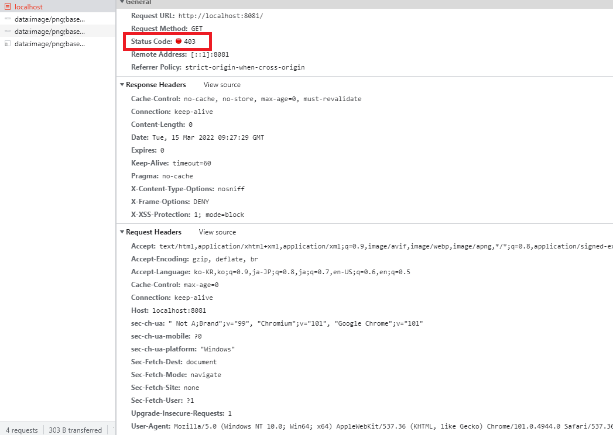
始めにルートページやindex.htmlを接続するとエラーが発生します。認証でエラーが発生したことです。
ログインしましょう。
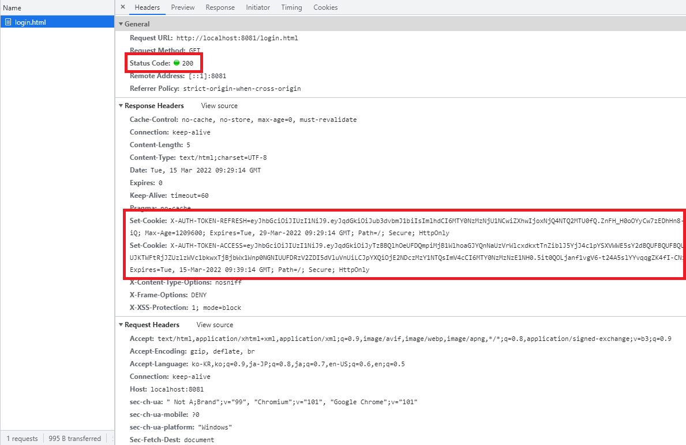
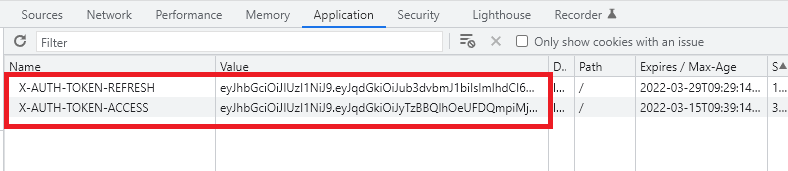
正常コード200が出力させ、ResponseにはSet-Cookieヘッダーでクッキーがブラウザのデータに格納されることを確認できるでしょう。
また、ルートページやindex.htmlを接続しましょう。
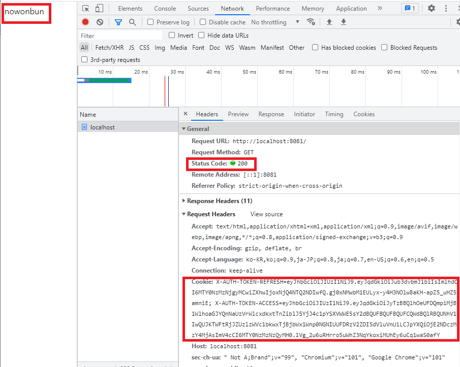
今回は正常認証にさせページが正常に出力しました。
また、Access-Tokenを作成しましょう。
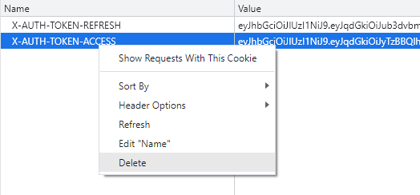
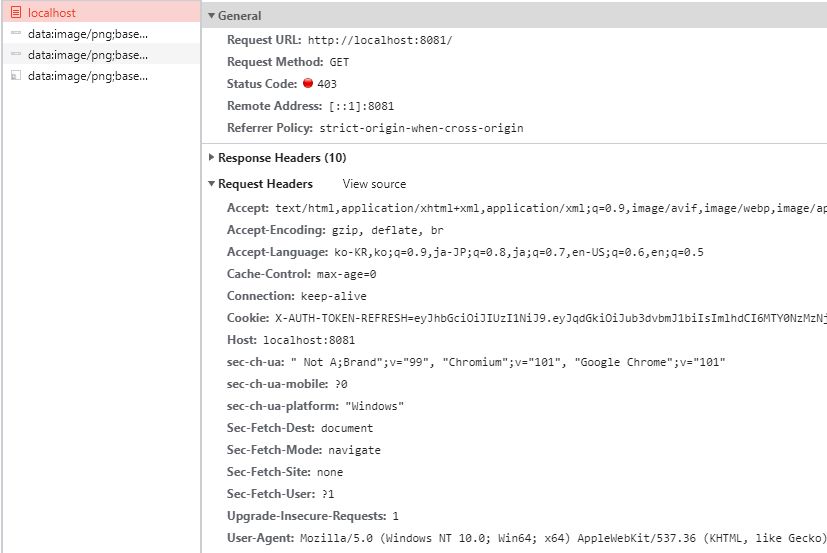
Refresh-Tokenがありますが、ルートページには認証失敗になります。
また、RefreshページでAccess-Tokenを更新しましょう。
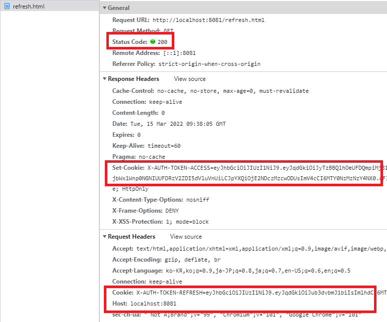
Access-Tokenが更新することを確認できるでしょう。
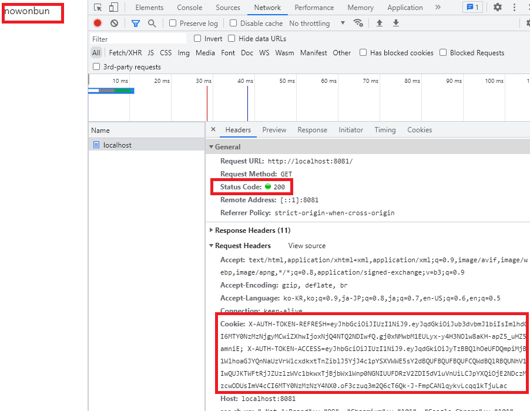
また、ルートページが正常に開くことを確認できます。
今回はログアウトです。
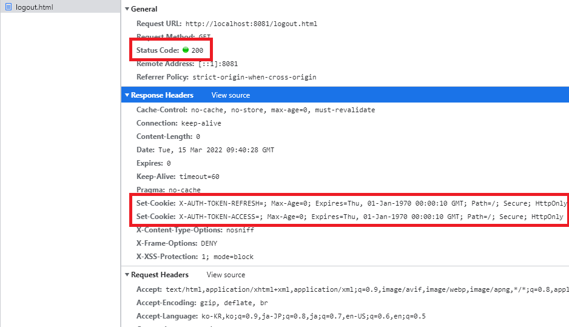
クッキーが削除しました。Refreshページに接続しましょう。
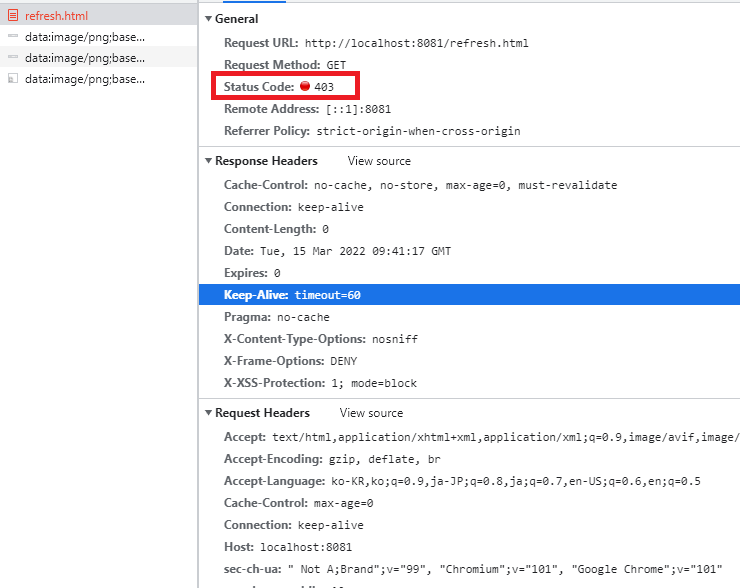
Refresh-Tokenがないので、エラーが発生します。
ここまで私が思う通りに作成できました。
少し、理解しやすくため、すべてクッキーで作業しましたが、もっとセキュリティを厳しくするためにはAccess-Tokenの場合はヘッダーからデータを受け取って要請(Request)はform-dataでやり取りしてブラウザメモリからも見えなくする方法がもっと良いと思います。
それじゃなければ、トークンにもっと暗号化されたデータをいれてvalidate(検証)をもっと複雑にする方法もあるでしょう。
ここまでJavaのSpring bootでWeb-Filterを設定する方法(Spring Security)に関する説明でした。
ご不明なところや間違いところがあればコメントしてください。
- [Java] 63. Spring bootでcronスケジューラとComponentアノテーション2022/03/16 18:57:30
- [Java] 62. Spring bootでWeb-Filterを設定する方法(Spring Security)2022/03/15 22:16:37
- [Java] 61. Spring bootでRedisデータベースを利用してセッションクラスタリング設定する方法2022/03/01 18:20:52
- [Java] 60. Spring bootでApacheの連結とロードバランシングを設定する方法2022/02/28 18:45:48
- [Java] 59. Spring bootのJPAでEntityManagerを使い方2022/02/25 18:27:48
- [Java] 58. EclipseでSpring bootのJPAを設定する方法2022/02/23 18:11:10
- [Java] 57. EclipseでSpring bootを設定する方法2022/02/22 19:04:49
- [Java] 56. Web serviceのサーブレット(Servlet)で初期化作業(properties設定)2021/07/02 17:10:36
- [Java] 55. Spring frameworkに文字化けを解決する方法(Encoding設定)2021/06/30 16:37:16
- [Javascript] Node.jsをインストールしてReactを使う方法2022/03/23 18:01:34
- [Java] 63. Spring bootでcronスケジューラとComponentアノテーション2022/03/16 18:57:30
- [Java] 62. Spring bootでWeb-Filterを設定する方法(Spring Security)2022/03/15 22:16:37
- [Java] JWT(Json Web Token)を発行、確認する方法2022/03/14 19:12:58
- [Java] 61. Spring bootでRedisデータベースを利用してセッションクラスタリング設定する方法2022/03/01 18:20:52
- [Java] 60. Spring bootでApacheの連結とロードバランシングを設定する方法2022/02/28 18:45:48
- [Java] 59. Spring bootのJPAでEntityManagerを使い方2022/02/25 18:27:48
- [Java] 58. EclipseでSpring bootのJPAを設定する方法2022/02/23 18:11:10
- [Java] 57. EclipseでSpring bootを設定する方法2022/02/22 19:04:49
- [Python] Redisデータベースに接続して使い方2022/02/21 18:23:49
- [Java] Redisデータベースを接続して使い方(Jedisライブラリ)2022/02/16 18:13:17
- [C#] Redisのデータベースを接続して使い方2022/02/15 18:46:09
- [CentOS] Redisデータベースをインストールする方法とコマンドを使い方2022/02/14 18:33:07
- [Design pattern] 3-6. ステートパターン(State pattern)2021/11/17 20:04:47
- [Design pattern] 3-5. メメントパターン(Memento pattern)2021/11/16 20:01:36